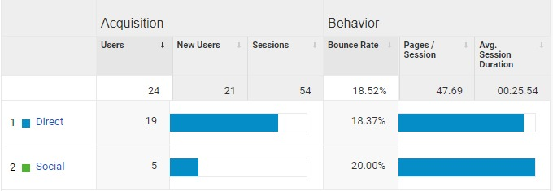

Google Analytics is a powerful web analytics tool that tracks and reports on website traffic. Using digital analytics can help people and businesses collect and analyze data about their websites to make decisions that are most effective in their efforts.
I chose to add Google Analytics tracking to my User Science Journal and have been collecting data since on it kicked off not long ago. I don't anticipate that this site will receive many visitors but thought it would be an interesting learning experience, nonetheless.
Setting Up Google Analytics
To set up Google Analytics, I created an account on the Google Analytics Marketing Platform and
filled out account details about the site. Google Analytics uses Javascript code added to the website pages
to collect data and send it to Google Analytics. For this site, the tracking code was added to the
head tag in each page of the User Science Journal.
My Predictions
My goal with Google Analytics is to get a better understanding of how users are engaging with the site and to better understand the dimensions and metrics used for reporting.
Like I mentioned earlier, I don't expect to see tons of traffic to this site but it will be interesting to see information about demographics and traffic source. I expect that many of the visitors to this site will be people with an interest in web technology who may find their way here through an organic web search. I'm also expecting to see a majority of the sessions come from a desktop device and be located in the United States.
| Analytics Report | My Prediction |
|---|---|
| Demographics | Male, ages 25 - 34 |
| Interests | Web technology |
| Location | United States |
| Acquisition | Organic search |
| Device | Desktop |
| Browser | Google Chrome |
Preliminary Findings
After collecting data for a number of weeks, I was a little disappointed to find that the demographics information on age, gender, and interests was not available. Here's an overview of the preliminary findings for the period May 1 - May 24:
| Analytics Report | Preliminary Findings |
|---|---|
| Demographics | No data available |
| Interests | No data available |
| Location | United States |
| Acquisition | 79.2% Direct, 20.8% Social |
| Device | 58.33% Desktop, 41.67% Mobile |
| Browser | 66.67% Google Chrome |
The data collected was aggregated and organized based on a number of criteria.
 Google Analytics Acquisition